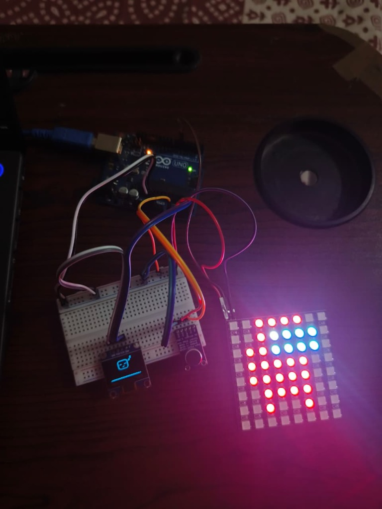
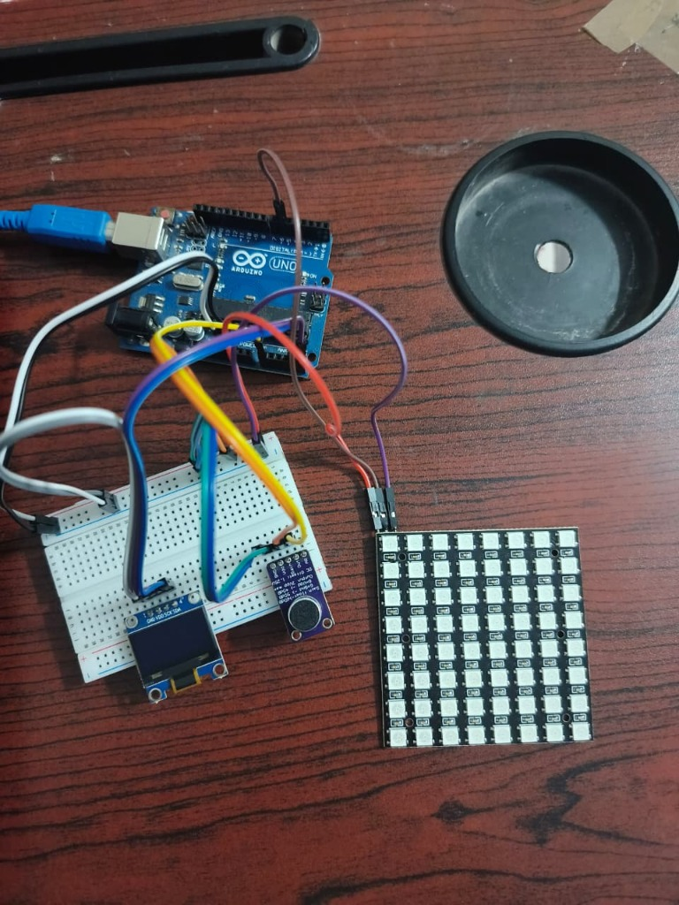

Project 6: Dual-Display Audio-Reactive Beat Visualizer & Spectrum Equalizer



Goal: Build a real-time dual-display audio-reactive beat visualizer and 8-band frequency spectrum equalizer on an Arduino Uno within 2 KB SRAM.
What I did: Sampled acoustic audio from a MAX9814 microphone at ~32 kHz (ADC prescaler 32) with DC-offset removal and applied the Goertzel DSP algorithm across 8 bands (1 kHz–8 kHz). Synchronized two displays: an 8×8 WS2812B RGB matrix (walking crewmate → 500 ms bass-drop explosion with 14 sparks → pulsing-eye skull reveal) and a 0.96" SSD1306 I2C OLED (grooving character + 16-bar peak-hold equalizer). Built with teammates Zaid Alvi & Yashasvi Kumar.
What I learned: How to implement efficient frequency-domain DSP (Goertzel filters) on an 8-bit ATmega328P microcontroller, manage SRAM using U8g2 1-page buffering, and run 400 kHz Fast I2C alongside NeoPixels without audio lag.